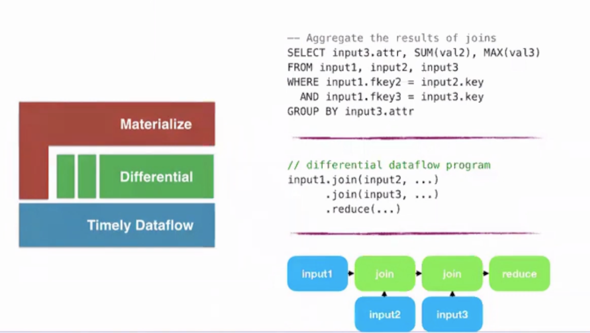

Arjun is the Co-founder and CEO of Materialize.
What is a streaming database?
- Optimized for view-maintenance on an ongoing basis over streams of already processed txns.
- Traditionally, most systems were either OLTP or OLAP systems.
- Old Architecture:
- OLTP -> Batch ETL -> OLAP -> SQL -> BI Tools, Reports, Data Mining
- Ideal Architecture Today:
- DB ->
- (Streaming Pipeline) Streaming CDC -> Stream Processing -> Microservices -> Visualization, Alerting, Monitoring
- Some tools for stream processing: Apache Flink, Apache Druid, Kafka Streams
- (Batch Pipeline) Batch ELT -> OLAP -> SQL -> BI Tools, Reports, Data Mining
- (Streaming Pipeline) Streaming CDC -> Stream Processing -> Microservices -> Visualization, Alerting, Monitoring
- DB ->
- A lot of tooling is needed to get data from a stream reliably to dashboards, alerts and applications. In essence a lot of these tools are just calculating materialized views over the streamed data. With Materialize:
- DB -> Streaming CDC -> Stream Processing -> Materialize -> SQL -> Visualization, Alerting, Monitoring
The Streaming Ecosystem
- What’s different about online view maintenance (OLVM)?
- Queries run for a long time
- OLTP/OLAP queries are optimized at execution time. You can re-plan for each query.
- Streaming queries need to be optimal forever.
- Once you create a view, query plan is fixed.
- Query planning is much harder since an OLTP system will maintain an evaluation context and can decide to bail and re-run a query but that isn’t an option in dataflow engines. It needs to have a static query plan prepared.
- Error handling is also more difficult since the DB needs to keep running and making progress.
- Statistics won’t save you
- Past performance is not indicative of future results.
- Most query optimization literature for OLAP is oriented around the idea of getting good cardinality estimates of your tables and using that to choose the best query plan.
- In streaming, you’ve to be adaptable to fast and slow moving streams which can change the no. of events by a large amount. Sometimes, you might be using data combined from a slow and fast moving stream which further increases the complexity.
- Q/A: You’d have a dimension and a fact table where the dimension table is mostly static. So you could have some statistics about the fact table using the dimension table. Or are there no static tables in streaming?
- In streaming, people reissue the dimension tables because of updates from batch ETL. This can be really bad for performance if your query plans assumed that the dimension tables are mostly going to be static.
- In OLAP, you could just re-plan everything.
- Q/A: Do people actually drop the entire dimension table and then load it back that often?
- Yeah. It’s pretty common.
- Writes are already ordered
- No concurrency control (similar to OLAP) is needed.
- Query patterns are known and (mostly) repeated
- A lot of things can be done ahead of time.
- Queries run for a long time
A Streaming Manifesto
- SQL : Declarative
- A lot of streaming systems don’t have full SQL support (arbitrary joins, non-window join conditions etc.) .
- Do only what’s necessary: Reactive to input changes, little to no busywork
- Existing streaming processors have massive hardware footprint even if they’re ingesting low amounts of data due to complex queries.
- Joins: No mandatory temporal windows; Arbitrary join conditions
- Existing streaming systems require streaming joins be windowed along a temporal dimension (i.e. if input stream is changing over time, the joins is only evaluated over some fixed window)
- As per their docs, ”JOINs work over the available history of both streams, which ultimately provides an experience more similar to an RDBMS than other streaming platforms.”
Materialize : Architecture
- Materialize is built on top of timely dataflow and differential dataflow.
- https://github.com/TimelyDataflow/timely-dataflow
- Streaming compute engine. Scale-out, stateful, cyclic dataflow engine.
- Can apply arbitrary operators (written in Rust) on data. These operators are passed timestamps along w/ other input data.
- https://github.com/TimelyDataflow/differential-dataflow
- Has an opinionated set of differential operators (like Join, Aggregate, Filter, Map, Range)
- Range: index building operator that takes care of state management
- Has an opinionated set of differential operators (like Join, Aggregate, Filter, Map, Range)
- https://github.com/TimelyDataflow/timely-dataflow
- Materialize on top of these handles client connections, maintains catalogs, streams, views. It does parsing, planning, optimizing of queries and constructing dataflow plans from these queries.

Traditional streaming systems achieve parallelism by sharding on operator.
- Eg. Multiple workers for “Count” operator in a pipeline.
- This can get expensive for complex queries even for low data volume since the data passes through each worker for an operator one by one. Some of the operations (eg. “Filter”) might even be no-op for a lot of data.
Timely dataflow cooperatively schedules every operator on each worker and shards the entire dataflow graph by key.
- Timestamps drive the movement of data.
Building Materialize : Experiences
- Writing performant dataflow programs is very hard.
- Efficient state management is the key.
- Existing stream processors outsource state management to RocksDB which leads to loss of control over things like when compaction happens.
- SQL requires 100% coverage.
- Q/A: How do you cover the SQL standard entirely?
- We don’t. We support Joins, Subqueries etc. Don’t support CTEs and a few other things yet.
- Q/A: How do you cover the SQL standard entirely?
Q/A
- Does this dataflow uses multi-way joins with worst case optimality to do some kind of computations?
- We’re using multi-way joins but not the algorithm with worst case join optimality .
- What is the idea of consistency in your system?
- We don’t do any concurrency control on our end because our inputs are ordered for us and have a timestamp associated with them but our system is essentially maintaining snapshot isolation.
- Can I combine windows w/ different durations? (Sliding window semantics)
- No.
- What aspect of the implementation in Materialized was the most difficult?
- Query planning to get out a static dataflow graph.
- Materialized optimizer is written from scratch.